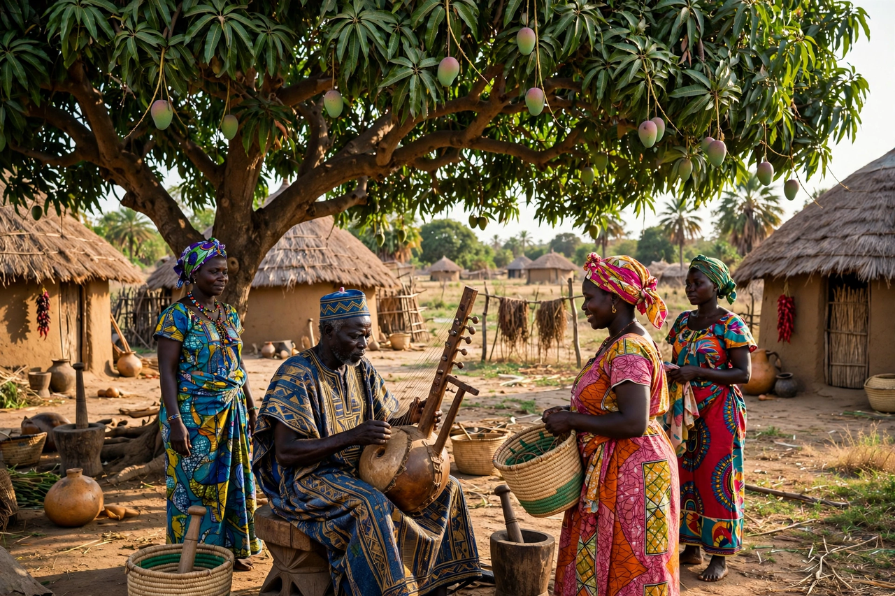

From Wikipedia, the free encyclopedia
| Mandinka people | |
| Total population | approx. 11–13 million |
|---|---|
| Regions | The Gambia, Senegal, Mali, Guinea, Guinea-Bissau, Sierra Leone, Ivory Coast, Burkina Faso |
| Languages | Mandinka (a Mande language); also French, English, Portuguese locally |
| Religion | Predominantly Islam, with traditional influences |
The Mandinka (also spelled Mandingo, Malinke, and Mandé) are a West African ethnic group native to the upper Niger and Gambia river basins. Descended from the Mali Empire founded by Sundiata Keita in the 13th century, they are one of the largest ethnolinguistic groups in West Africa and form the largest single ethnic group in The Gambia, where figures such as President Dawda Kairaba Jawara have shaped national politics.

Mandinka society grew with the Mali Empire, whose trade networks carried gold and salt across the Sahara. From the 16th century, Mandinka states such as Kaabu expanded into the Senegambia region. In the 19th century, religious wars — including the Soninke-Marabout wars — accelerated the Islamisation of Mandinka society. During the Atlantic slave trade, many Mandinka were transported to the Americas; Alex Haley's Roots famously dramatised the story of the Mandinka captive Kunta Kinte of Juffureh, near James Island.
Mandinka culture is renowned for its griot (jali) tradition: hereditary praise-singers and historians who preserve genealogies and epics, accompanying themselves on the kora, balafon, or ngoni. Society is traditionally organised in patrilineal clans and, historically, castes including nobles, artisans, and griots. Agriculture — groundnuts, millet, rice, and maize — remains the economic foundation in rural areas.
See also: Kora (instrument) · Dawda Kairaba Jawara · Mali Empire · Wolof people · Fula people